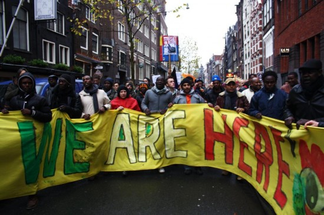
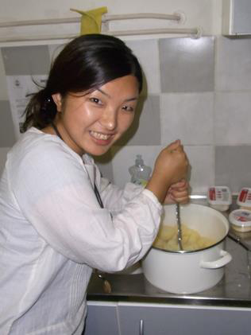
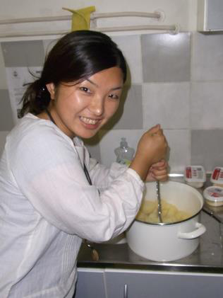

Projecten
Overig
Algemeen Nieuws
Wij zijn hier
In Amsterdam-West is al enige tijd geleden een tentenkamp van geillegaliseerden ontstaan. Ongeveer 100 uitgeprocedeerde asielzoekers en andere immigranten trotseren kou en regen om Nederland te laten zien dat ze letterlijk op straat zijn beland. Niet dat ze het fijn vinden, het is koud en mensonterend. Maar het is een manier om aandacht te vragen voor de onmenselijke situatie van mensen die soms al jaren lang op straat wonen. Deze groep mensen vraagt om hun mensenrechten en daarom willen ze zichtbaar zijn – zowel in het kamp, als in demonstraties, als op internet.
VIA wil deze mensen graag ondersteunen in het uiten van stem. Geen mens is illegaal was een leuze op de demonstratie op 10 november in Amsterdam en wordt onderschreven door VIA. Fort Europa leidt tot een grotere kloof tussen mensen, die VIA graag wil doorbreken.
Veel mensen zijn als vrijwilligers actief in het tentenkamp in Osdorp, of in het soortgelijke kamp in Den Haag, of bij de organisatie eromheen. VIA-vrijwilligers zijn betrokken bij het inzamelen van materialen voor het actiekamp in Osdorp en bezoeken het kamp om solidariteit te tonen of voor praktische ondersteuning.
Het kamp draait op mensen die uit overtuiging komen helpen. Iedereen is welkom om langs te komen, naar de verhalen van de demonstranten te luisteren, ideeën uit te wisselen. Waar ook grote behoefte aan is, is warme kleren voor mannen, thermoskannen met thee & koffie, mensen die warm eten willen koken thuis (materialen zijn in het kamp aanwezig, maar er is geen gas of electriciteit) en iedere andere creatieve manier om warmte naar het kamp te brengen.
Meer informatie is te vinden op de volgende links:
http://wijzijnhier.org/
https://www.facebook.com/WijZijnHier
http://www.kamposdorp.blogspot.nl/
Muziekfilm uit Alexandrië
Donderdag 11 en vrijdag 12 oktober 20.30 uur, Filmhuis Cavia
Van Hallstraat 52-I (trap op), Amsterdam
www.filmhuiscavia.nl
Microphone, Egypte, Ahmad Abdalla, 2010,
120 minuten, Arabisch, Engels ondertiteld
Een film over de jonge generatie in Egypte. Khaled komt na jaren terug in zijn geboortestad Alexandrië en ontdekt daar de underground jeugdbeweging die zich ontwikkelt in de schaduw van de stad, een wereld van illegale concerten op daken, graffiti artiesten, skaters en hiphoppers, die een andere wereld willen. Veel echte artiesten spelen mee en geven een beeld van de onrust bij jongeren. De jongeren die niet veel later gingen demonstreren voor een beter land. De film heeft verschillende internationale prijzen gewonnen o.a. Toronto, Dubai. Meer info via http://www.microphone-film.com/
Twee Egyptische muzikanten uit Alexandrië (violist Ayman Asfour en gitarist Khaled Kaddal) zijn aanwezig bij de film en geven een inleiding. Zij zijn actief voor de organisatie Gudran die probeert door middel van kunst mensen meer te betrekken bij maatschappelijke issues en die kunst (inclusief muziek) naar de straat brengt. Khaled en Asfour zijn in Nederland op uitnodiging van Stichting VIA. Zij zullen zelf een korte improvisatie spelen (akoestisch). Stijl: oriëntaals met jazz en andere invloeden. De muzikanten zijn na afloop ook aanspreekbaar voor vragen over de situatie van muzikanten/jongeren in Egypte.Brochure
De nieuwe VIA-brochure is uit
De nieuwe VIA-brochure heeft veel gemeen met deze website. Het legt uit wat VIA doet en waar we voor staan. Stap voor stap word je door het inschrijfproces geleid. Alleen hij staat niet op een beeldscherm. Vind je dat fijn en zou je de brochure willen ontvangen, stuur een mailtje naar This email address is being protected from spambots. You need JavaScript enabled to view it. en we sturen je hem graag op.
New faces
Apart from Tanja, there are more new VIA activists. Here, Saori and Martine introduce themselves.
 

Saori: Last May, I moved to The Netherlands and was looking for similar projects. Through that I found VIA. Since that time I have been working with VIA a bit more.
Eerste SCI project 90 jaar geleden
On the November 20th 1920, then it was Saturday as well, the firstworkcamp started in the small village Esnes near Verdun.
In our archives we have the report form one of the campleaders, who
describes lively the beginning of the project. Visa problems, getting
together all the working tools and a fresh cold night in Esnes shaped
the start of the first workcamp.
More Articles...